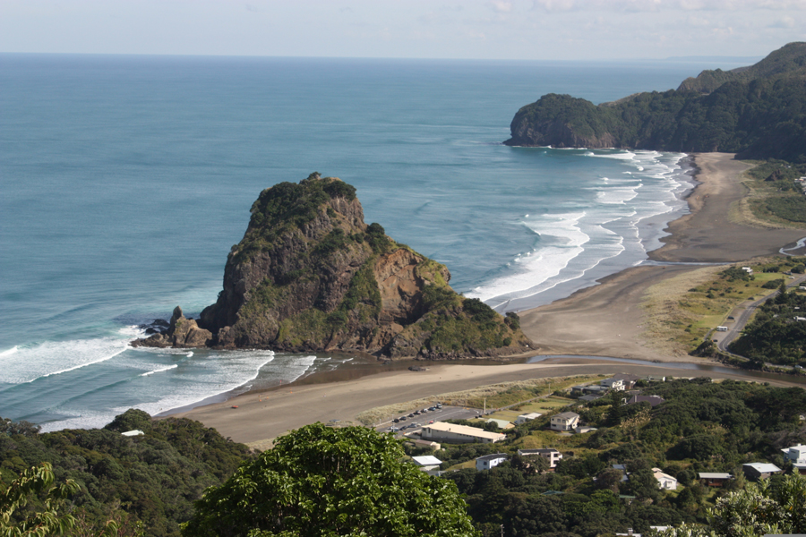

Sky Tower!
Auckland Tourist Location
Auckland's Iconic Volcanic Landmark!
Lion Rock is one of the most recognisable natural landmarks at Piha
Beach on Auckland's west coast. The large volcanic rock formation
stands prominently beside the beach and has become an iconic part of
the area's scenery. Its distinctive shape resembles a lion, giving
the landmark its name.
Piha is a popular destination for visitors looking to experience
Auckland's rugged west coast. Visitors can enjoy the beach, explore
the surrounding area, take photographs of Lion Rock, and experience
the dramatic coastal scenery. The area is particularly popular with
people who enjoy nature, photography, and outdoor activities.
Lion Rock is a good option for travellers looking for an affordable
outdoor attraction. There is no admission fee to visit the beach or
view Lion Rock, although visitors may need to budget for transport,
food, and other activities during their trip.
Facts:
- Located at Piha Beach on Auckland's west coast
- Natural volcanic rock formation
- Named because of its resemblance to a lion
- Popular location for photography
- Surrounded by beaches and coastal scenery
- Popular destination for outdoor activities
- Free to view and explore the surrounding beach
Costs:
- Entry to Piha Beach: Free
- Viewing Lion Rock: Free
- Estimated food costs: $10-$30 per person
- Estimated transport costs: $5-$30 depending on transport
- Estimated total visit cost: $15-$60 per person